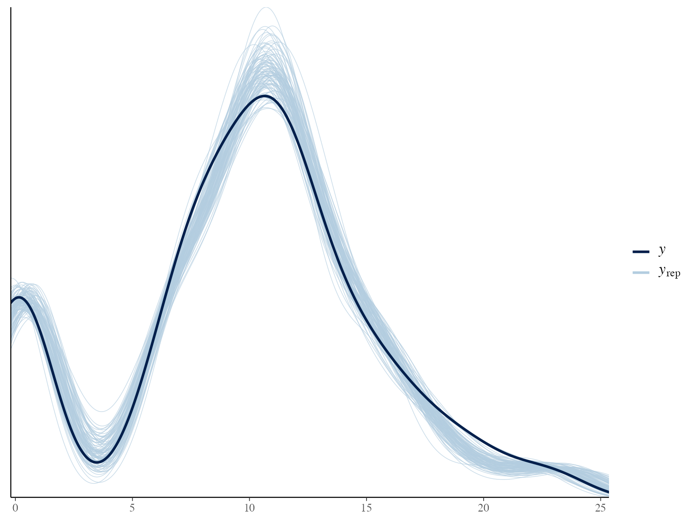
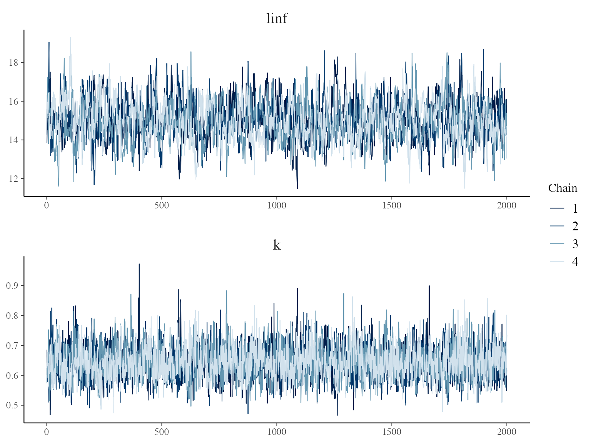
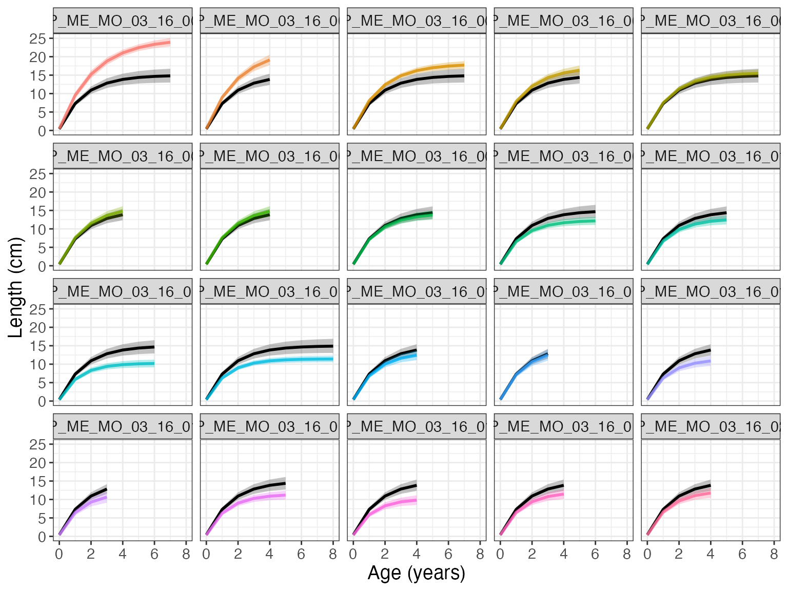

Somatic growth of fishes is a fundamental trait that determines essential ecosystem services such as food provision and nutrient cycling. Growth rate information can be derived through age estimation based on the analysis of sagittal otoliths. While fitting growth models on size-at-age data is the most frequently employed approach to deriving growth parameters, this method requires a high number of individuals. An alternative approach based on back-calculation can provide approximations to individual-level growth trajectories. fishgrowbot provides functions to perform the back-calculation in a Bayesian framework. Further, the package provides a Bayesian framework to fit the von Bertalanffy growth model to the back-calculated lengths in a hierarchical structure. Finally, fishgrowbot provides functions to visualize the results. In this vignette, we provide an introduction to fishgrowbot through a case study. For more theoretical background of the methodology, see Morat et al. (2020)
First things first: we need to load some packages.
library(fishgrowbot)
library(dplyr)
#>
#> Attaching package: 'dplyr'
#> The following objects are masked from 'package:stats':
#>
#> filter, lag
#> The following objects are masked from 'package:base':
#>
#> intersect, setdiff, setequal, unionTo introduce the functionalities of fishgrowbot, we look at an example for Epinephelus merra. The function bcalc() returns both a dataframe with the back-calculated lengths and their uncertainty and the model object for more details on the fit of the bc stan model.
The input data should contain:
+ id: Unique fish id per individual.
+ radi: Measurements of otolith growth rings (in mm).
+ agei: Age estimation of fish.
+ lencap: Length at capture (in mm).
+ radcap: Radius of otolith at capture (in mm).
+ l0p: Length of fish at hatching (in mm).
# get data
em <- filter(coral_reef_fishes_data, species == "Epinephelus merra",
location == "Moorea")
# back-calculation
bc <- bcalc(data = em)
#>
#> SAMPLING FOR MODEL 'stan_bcalc' NOW (CHAIN 1).
#> Chain 1:
#> Chain 1: Gradient evaluation took 4.6e-05 seconds
#> Chain 1: 1000 transitions using 10 leapfrog steps per transition would take 0.46 seconds.
#> Chain 1: Adjust your expectations accordingly!
#> Chain 1:
#> Chain 1:
#> Chain 1: Iteration: 1 / 2000 [ 0%] (Warmup)
#> Chain 1: Iteration: 200 / 2000 [ 10%] (Warmup)
#> Chain 1: Iteration: 400 / 2000 [ 20%] (Warmup)
#> Chain 1: Iteration: 600 / 2000 [ 30%] (Warmup)
#> Chain 1: Iteration: 800 / 2000 [ 40%] (Warmup)
#> Chain 1: Iteration: 1000 / 2000 [ 50%] (Warmup)
#> Chain 1: Iteration: 1001 / 2000 [ 50%] (Sampling)
#> Chain 1: Iteration: 1200 / 2000 [ 60%] (Sampling)
#> Chain 1: Iteration: 1400 / 2000 [ 70%] (Sampling)
#> Chain 1: Iteration: 1600 / 2000 [ 80%] (Sampling)
#> Chain 1: Iteration: 1800 / 2000 [ 90%] (Sampling)
#> Chain 1: Iteration: 2000 / 2000 [100%] (Sampling)
#> Chain 1:
#> Chain 1: Elapsed Time: 0.628127 seconds (Warm-up)
#> Chain 1: 0.213846 seconds (Sampling)
#> Chain 1: 0.841973 seconds (Total)
#> Chain 1:
#>
#> SAMPLING FOR MODEL 'stan_bcalc' NOW (CHAIN 2).
#> Chain 2:
#> Chain 2: Gradient evaluation took 2.6e-05 seconds
#> Chain 2: 1000 transitions using 10 leapfrog steps per transition would take 0.26 seconds.
#> Chain 2: Adjust your expectations accordingly!
#> Chain 2:
#> Chain 2:
#> Chain 2: Iteration: 1 / 2000 [ 0%] (Warmup)
#> Chain 2: Iteration: 200 / 2000 [ 10%] (Warmup)
#> Chain 2: Iteration: 400 / 2000 [ 20%] (Warmup)
#> Chain 2: Iteration: 600 / 2000 [ 30%] (Warmup)
#> Chain 2: Iteration: 800 / 2000 [ 40%] (Warmup)
#> Chain 2: Iteration: 1000 / 2000 [ 50%] (Warmup)
#> Chain 2: Iteration: 1001 / 2000 [ 50%] (Sampling)
#> Chain 2: Iteration: 1200 / 2000 [ 60%] (Sampling)
#> Chain 2: Iteration: 1400 / 2000 [ 70%] (Sampling)
#> Chain 2: Iteration: 1600 / 2000 [ 80%] (Sampling)
#> Chain 2: Iteration: 1800 / 2000 [ 90%] (Sampling)
#> Chain 2: Iteration: 2000 / 2000 [100%] (Sampling)
#> Chain 2:
#> Chain 2: Elapsed Time: 0.658096 seconds (Warm-up)
#> Chain 2: 0.190219 seconds (Sampling)
#> Chain 2: 0.848315 seconds (Total)
#> Chain 2:
#>
#> SAMPLING FOR MODEL 'stan_bcalc' NOW (CHAIN 3).
#> Chain 3:
#> Chain 3: Gradient evaluation took 2.6e-05 seconds
#> Chain 3: 1000 transitions using 10 leapfrog steps per transition would take 0.26 seconds.
#> Chain 3: Adjust your expectations accordingly!
#> Chain 3:
#> Chain 3:
#> Chain 3: Iteration: 1 / 2000 [ 0%] (Warmup)
#> Chain 3: Iteration: 200 / 2000 [ 10%] (Warmup)
#> Chain 3: Iteration: 400 / 2000 [ 20%] (Warmup)
#> Chain 3: Iteration: 600 / 2000 [ 30%] (Warmup)
#> Chain 3: Iteration: 800 / 2000 [ 40%] (Warmup)
#> Chain 3: Iteration: 1000 / 2000 [ 50%] (Warmup)
#> Chain 3: Iteration: 1001 / 2000 [ 50%] (Sampling)
#> Chain 3: Iteration: 1200 / 2000 [ 60%] (Sampling)
#> Chain 3: Iteration: 1400 / 2000 [ 70%] (Sampling)
#> Chain 3: Iteration: 1600 / 2000 [ 80%] (Sampling)
#> Chain 3: Iteration: 1800 / 2000 [ 90%] (Sampling)
#> Chain 3: Iteration: 2000 / 2000 [100%] (Sampling)
#> Chain 3:
#> Chain 3: Elapsed Time: 0.598406 seconds (Warm-up)
#> Chain 3: 0.203322 seconds (Sampling)
#> Chain 3: 0.801728 seconds (Total)
#> Chain 3:
#>
#> SAMPLING FOR MODEL 'stan_bcalc' NOW (CHAIN 4).
#> Chain 4:
#> Chain 4: Gradient evaluation took 2.7e-05 seconds
#> Chain 4: 1000 transitions using 10 leapfrog steps per transition would take 0.27 seconds.
#> Chain 4: Adjust your expectations accordingly!
#> Chain 4:
#> Chain 4:
#> Chain 4: Iteration: 1 / 2000 [ 0%] (Warmup)
#> Chain 4: Iteration: 200 / 2000 [ 10%] (Warmup)
#> Chain 4: Iteration: 400 / 2000 [ 20%] (Warmup)
#> Chain 4: Iteration: 600 / 2000 [ 30%] (Warmup)
#> Chain 4: Iteration: 800 / 2000 [ 40%] (Warmup)
#> Chain 4: Iteration: 1000 / 2000 [ 50%] (Warmup)
#> Chain 4: Iteration: 1001 / 2000 [ 50%] (Sampling)
#> Chain 4: Iteration: 1200 / 2000 [ 60%] (Sampling)
#> Chain 4: Iteration: 1400 / 2000 [ 70%] (Sampling)
#> Chain 4: Iteration: 1600 / 2000 [ 80%] (Sampling)
#> Chain 4: Iteration: 1800 / 2000 [ 90%] (Sampling)
#> Chain 4: Iteration: 2000 / 2000 [100%] (Sampling)
#> Chain 4:
#> Chain 4: Elapsed Time: 0.696645 seconds (Warm-up)
#> Chain 4: 0.190861 seconds (Sampling)
#> Chain 4: 0.887506 seconds (Total)
#> Chain 4:
head(bc$lengths)
#> id age l_m l_sd l_lb l_ub
#> 1 EP_ME_MO_03_16_001 0 1.5000 1.094098e-15 1.5000 1.5000
#> 2 EP_ME_MO_03_16_001 1 154.3969 5.747777e+00 143.2196 165.8864
#> 3 EP_ME_MO_03_16_001 2 178.4719 4.542739e+00 169.5591 187.4810
#> 4 EP_ME_MO_03_16_001 3 192.2266 3.718605e+00 184.8975 199.5706
#> 5 EP_ME_MO_03_16_001 4 205.7123 2.823156e+00 200.1250 211.2665
#> 6 EP_ME_MO_03_16_001 5 217.7985 1.951656e+00 213.9225 221.6255The function bcplot helps visualize the back calculation. Some examples:
bcplot(bc$lengths)
bcplot(bc$lengths, colorid = TRUE)
bcplot(bc$lengths, colorid = TRUE, facet = TRUE, error = TRUE)Then, we can fit the hierarchical von Bertalanffy growth model that allows for the estimation of multiple parameters. Importantly, length measures should be given in cm.
# fit growth model
growthmodel <- growthreg(length = bc$lengths$l_m / 10, age = bc$lengths$age,
id = bc$lengths$id, lmax = 32, linf_m = 28,
linf_sd = 5, l0_m = 0.15, l0_sd = 0.015, iter = 4000,
open_progress = FALSE, plot = FALSE)
#>
#> SAMPLING FOR MODEL 'vonbert' NOW (CHAIN 1).
#> Chain 1:
#> Chain 1: Gradient evaluation took 9.1e-05 seconds
#> Chain 1: 1000 transitions using 10 leapfrog steps per transition would take 0.91 seconds.
#> Chain 1: Adjust your expectations accordingly!
#> Chain 1:
#> Chain 1:
#> Chain 1: Iteration: 1 / 4000 [ 0%] (Warmup)
#> Chain 1: Iteration: 400 / 4000 [ 10%] (Warmup)
#> Chain 1: Iteration: 800 / 4000 [ 20%] (Warmup)
#> Chain 1: Iteration: 1200 / 4000 [ 30%] (Warmup)
#> Chain 1: Iteration: 1600 / 4000 [ 40%] (Warmup)
#> Chain 1: Iteration: 2000 / 4000 [ 50%] (Warmup)
#> Chain 1: Iteration: 2001 / 4000 [ 50%] (Sampling)
#> Chain 1: Iteration: 2400 / 4000 [ 60%] (Sampling)
#> Chain 1: Iteration: 2800 / 4000 [ 70%] (Sampling)
#> Chain 1: Iteration: 3200 / 4000 [ 80%] (Sampling)
#> Chain 1: Iteration: 3600 / 4000 [ 90%] (Sampling)
#> Chain 1: Iteration: 4000 / 4000 [100%] (Sampling)
#> Chain 1:
#> Chain 1: Elapsed Time: 9.02519 seconds (Warm-up)
#> Chain 1: 8.61429 seconds (Sampling)
#> Chain 1: 17.6395 seconds (Total)
#> Chain 1:
#>
#> SAMPLING FOR MODEL 'vonbert' NOW (CHAIN 2).
#> Chain 2:
#> Chain 2: Gradient evaluation took 6.6e-05 seconds
#> Chain 2: 1000 transitions using 10 leapfrog steps per transition would take 0.66 seconds.
#> Chain 2: Adjust your expectations accordingly!
#> Chain 2:
#> Chain 2:
#> Chain 2: Iteration: 1 / 4000 [ 0%] (Warmup)
#> Chain 2: Iteration: 400 / 4000 [ 10%] (Warmup)
#> Chain 2: Iteration: 800 / 4000 [ 20%] (Warmup)
#> Chain 2: Iteration: 1200 / 4000 [ 30%] (Warmup)
#> Chain 2: Iteration: 1600 / 4000 [ 40%] (Warmup)
#> Chain 2: Iteration: 2000 / 4000 [ 50%] (Warmup)
#> Chain 2: Iteration: 2001 / 4000 [ 50%] (Sampling)
#> Chain 2: Iteration: 2400 / 4000 [ 60%] (Sampling)
#> Chain 2: Iteration: 2800 / 4000 [ 70%] (Sampling)
#> Chain 2: Iteration: 3200 / 4000 [ 80%] (Sampling)
#> Chain 2: Iteration: 3600 / 4000 [ 90%] (Sampling)
#> Chain 2: Iteration: 4000 / 4000 [100%] (Sampling)
#> Chain 2:
#> Chain 2: Elapsed Time: 8.06386 seconds (Warm-up)
#> Chain 2: 9.16747 seconds (Sampling)
#> Chain 2: 17.2313 seconds (Total)
#> Chain 2:
#>
#> SAMPLING FOR MODEL 'vonbert' NOW (CHAIN 3).
#> Chain 3:
#> Chain 3: Gradient evaluation took 6.3e-05 seconds
#> Chain 3: 1000 transitions using 10 leapfrog steps per transition would take 0.63 seconds.
#> Chain 3: Adjust your expectations accordingly!
#> Chain 3:
#> Chain 3:
#> Chain 3: Iteration: 1 / 4000 [ 0%] (Warmup)
#> Chain 3: Iteration: 400 / 4000 [ 10%] (Warmup)
#> Chain 3: Iteration: 800 / 4000 [ 20%] (Warmup)
#> Chain 3: Iteration: 1200 / 4000 [ 30%] (Warmup)
#> Chain 3: Iteration: 1600 / 4000 [ 40%] (Warmup)
#> Chain 3: Iteration: 2000 / 4000 [ 50%] (Warmup)
#> Chain 3: Iteration: 2001 / 4000 [ 50%] (Sampling)
#> Chain 3: Iteration: 2400 / 4000 [ 60%] (Sampling)
#> Chain 3: Iteration: 2800 / 4000 [ 70%] (Sampling)
#> Chain 3: Iteration: 3200 / 4000 [ 80%] (Sampling)
#> Chain 3: Iteration: 3600 / 4000 [ 90%] (Sampling)
#> Chain 3: Iteration: 4000 / 4000 [100%] (Sampling)
#> Chain 3:
#> Chain 3: Elapsed Time: 8.61785 seconds (Warm-up)
#> Chain 3: 8.78801 seconds (Sampling)
#> Chain 3: 17.4059 seconds (Total)
#> Chain 3:
#>
#> SAMPLING FOR MODEL 'vonbert' NOW (CHAIN 4).
#> Chain 4:
#> Chain 4: Gradient evaluation took 6.4e-05 seconds
#> Chain 4: 1000 transitions using 10 leapfrog steps per transition would take 0.64 seconds.
#> Chain 4: Adjust your expectations accordingly!
#> Chain 4:
#> Chain 4:
#> Chain 4: Iteration: 1 / 4000 [ 0%] (Warmup)
#> Chain 4: Iteration: 400 / 4000 [ 10%] (Warmup)
#> Chain 4: Iteration: 800 / 4000 [ 20%] (Warmup)
#> Chain 4: Iteration: 1200 / 4000 [ 30%] (Warmup)
#> Chain 4: Iteration: 1600 / 4000 [ 40%] (Warmup)
#> Chain 4: Iteration: 2000 / 4000 [ 50%] (Warmup)
#> Chain 4: Iteration: 2001 / 4000 [ 50%] (Sampling)
#> Chain 4: Iteration: 2400 / 4000 [ 60%] (Sampling)
#> Chain 4: Iteration: 2800 / 4000 [ 70%] (Sampling)
#> Chain 4: Iteration: 3200 / 4000 [ 80%] (Sampling)
#> Chain 4: Iteration: 3600 / 4000 [ 90%] (Sampling)
#> Chain 4: Iteration: 4000 / 4000 [100%] (Sampling)
#> Chain 4:
#> Chain 4: Elapsed Time: 8.51591 seconds (Warm-up)
#> Chain 4: 7.94622 seconds (Sampling)
#> Chain 4: 16.4621 seconds (Total)
#> Chain 4:
# summary growth parameters
growthmodel$summary
#> mean se_mean sd 2.5% 25% 50%
#> k 0.64500216 0.0011817646 0.05322081 0.54717396 0.60845060 0.64330753
#> linf 14.98841579 0.0396914129 0.99755766 13.17927923 14.31739695 14.94247952
#> l0 0.42359669 0.0035471324 0.23882775 -0.03527297 0.26052457 0.42071421
#> t0 -0.04558787 0.0003963115 0.02682001 -0.10130897 -0.06328039 -0.04439278
#> kmax 0.39891902 0.0007970229 0.04093070 0.32519590 0.36980951 0.39684584
#> 75% 97.5%
#> k 0.67876680 0.754984657
#> linf 15.60498651 17.139827563
#> l0 0.58686006 0.902953359
#> t0 -0.02695131 0.003399286
#> kmax 0.42554647 0.484199802We can use existing packages rstan and bayesplot to make diagnostic plots.
library(rstan)
#> Loading required package: StanHeaders
#> Loading required package: ggplot2
#> rstan (Version 2.21.2, GitRev: 2e1f913d3ca3)
#> For execution on a local, multicore CPU with excess RAM we recommend calling
#> options(mc.cores = parallel::detectCores()).
#> To avoid recompilation of unchanged Stan programs, we recommend calling
#> rstan_options(auto_write = TRUE)
library(bayesplot)
#> This is bayesplot version 1.8.0
#> - Online documentation and vignettes at mc-stan.org/bayesplot
#> - bayesplot theme set to bayesplot::theme_default()
#> * Does _not_ affect other ggplot2 plots
#> * See ?bayesplot_theme_set for details on theme setting
# Posterior predictive check
yrep <- extract(growthmodel$stanfit, "y_rep")$y_rep
ppc_dens_overlay(y = bc$lengths$l_m / 10, yrep = yrep[1:100,])
#trace plots
posterior <- extract(growthmodel$stanfit, permuted = FALSE)
p <- mcmc_trace(posterior, pars = c("linf", "k"),
facet_args = list(nrow = 2, labeller = label_parsed))
p + facet_text(size = 15)
Now we can visualize the fit with the function gmplot().
gmplot(growthmodel)Setting id = TRUE, we can see the individual growth curves.
gmplot(growthmodel, id = TRUE)If there are many individuals, the id graph can quickly get crowded. Set facet = TRUE to have a subplot per individual.
gmplot(growthmodel, id = TRUE, facet = TRUE)